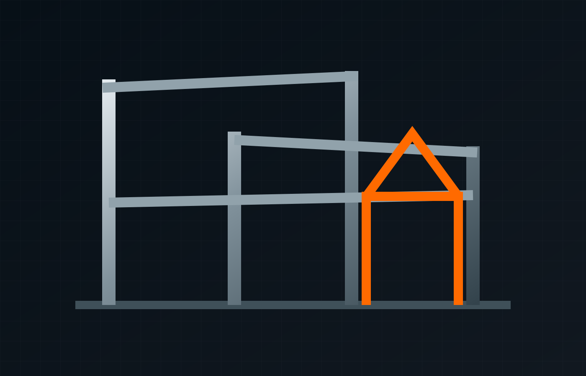

Bespoke fabrication.
Start with the brief.
Parkway's bespoke fabrication capability spans architectural metalwork, specialist components, structural work, access systems, fit-outs, enclosures and one-off problem solving.
From concept to finished metalwork.
The existing Parkway site highlights projects for hotels, shops, restaurants and large-scale architectural work, alongside custom industrial fabrications.
- Architectural metalwork
- Balustrades, railings & gates
- Bespoke staircases
- Safety cages & restricted access
- Structural steelwork
- Mezzanine floors
- Steel fire escapes
- Outdoor shelters

Current product capability.
Consolidated from Parkway's existing fabrication product catalogue.
A broad manufacturing toolkit.
Materials
Steel, stainless steel, aluminium, titanium, plastics, plus bespoke architectural references to copper, brass and specialist alloys.
Fabrication
Rolling, welding, drilling, bending, forming, guillotine and plasma cutting are all referenced in Parkway's existing capability.
Finishing
Powder coating, wet coating, dull polish, mirror polish, shot blasting and primed finishes are referenced for bespoke work.
Connect the requirements.
Assembly scope, interfaces, finish requirements and quantities.
- Compare all services
- General Industry enquiry guide
- Technical information to verify
- Project evidence & case-study structure
Sector relationships are proposed enquiry routes, subject to owner confirmation.